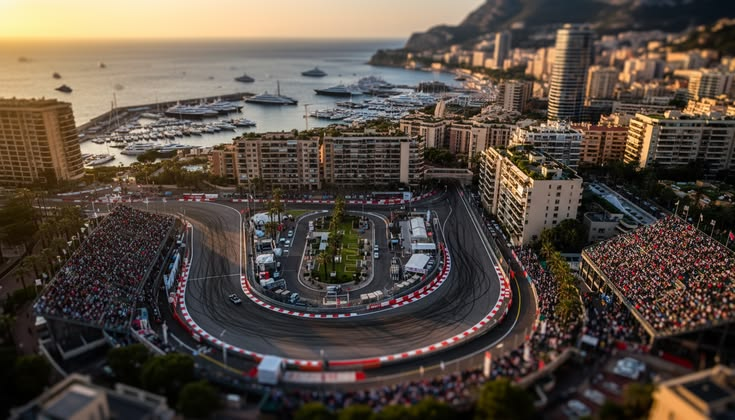

Présentation du circuit de Monaco
Le circuit de Monaco est un circuit automobile temporaire empruntant les rues de la ville de Monaco, dans les quartiers de La Condamine et Monte-Carlo. Il accueille chaque année le Grand Prix de Monaco et tous les deux ans le Grand Prix de Monaco Historique. La première course automobile s'y tient en 1929 et il devient en 1950 le deuxième circuit de l'histoire à être utilisé pour la première édition du championnat du monde de Formule 1, après Silverstone. Ce tracé est célèbre pour son caractère étroit et sinueux, offrant très peu de zones de dépassement. Il comporte des virages emblématiques comme le Fairmont Hairpin, l’un des plus lents du championnat. Le circuit est également réputé pour son passage dans le tunnel et sa section le long du port. Sa configuration reste quasiment inchangée depuis sa création, ce qui en fait un lieu chargé d’histoire. Enfin, il est considéré comme l’un des circuits les plus prestigieux et difficiles du calendrier de la Formule 1.
